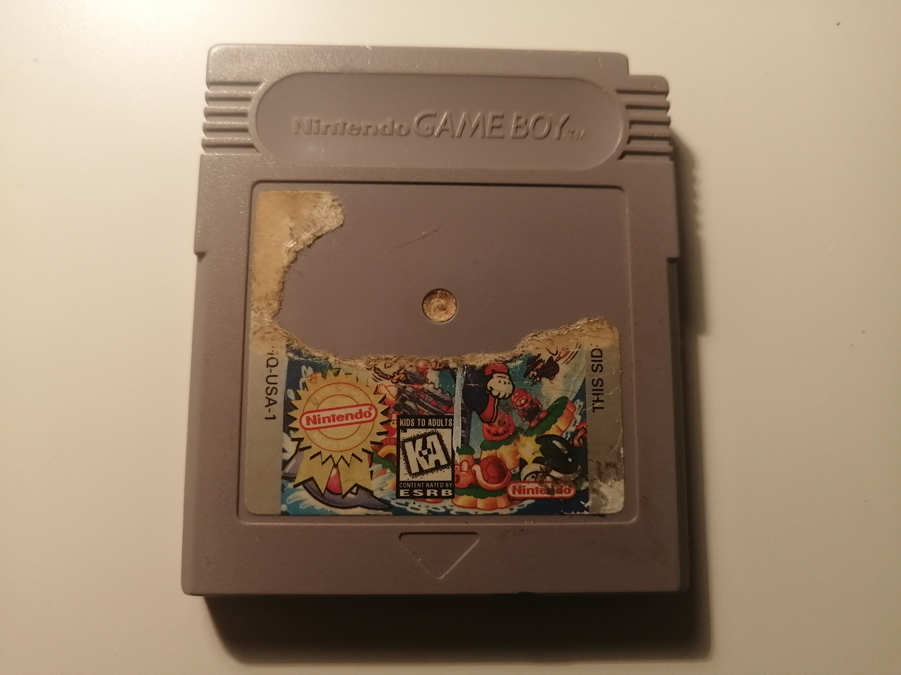
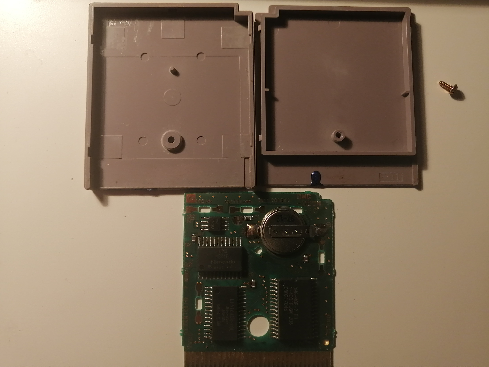
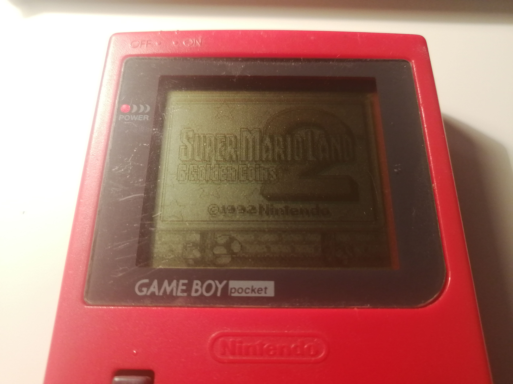

EN
Aujourd'hui j'ai nettoyé une cartouche Gameboy qui était plutôt sale. J'ai acheté ce jeu, Super Mario Land 2, pour dix dollars. Pourquoi ai-je choisi une cartouche dans une telle condition? Parce que tous les jeux que le magasin vendait était des jeux de type "shovelware" mise à part Tetris, donc je n'avais pas grand choix.

La cartouche a non seulement une étiquette démolie, mais elle a aussi une substance mystérieuse bleue en dessous.
Le jeu a aussi des problèmes de chargement et des problèmes de sauvetage. Je pense que les broches (je pense que ça veut dire "pins" en anglais mais
je n'en sais rien) et la batterie sont coupables.
J'ai ouvert la cartouche pour regarder l'intérieur.

Vous pouvez voir une tache bleue. La substance se retrouve aussi en dessous de la cartouche sur le plastique qui est habituellement proche des broches (c'est difficile de la voir sur la photo).
Heureusement qu'il y en avait pas sur le circuit.
Essayer d'enlever cette substance serait difficile pusique je ne peux pas juste la gratter vu que cela va endommager le plastique. Puisque je ne
pouvais pas trouver de solution pour le moment, j'ai remis cette énigme à plus tard.
J'ai lu sur iFixit que les cartouches de la Gameboy prennent des batteries CR2032. Puisque j'avais juste des CR2025, j'ai décidé de remettre le
changement de batterie à plus tard. Malheureusement pout moi, d'après plusieurs sites, les batteries CR2025 sont celles qu'il fallait. Je n'ai que
su cette information pendant que j'écrive cette paragraphe.
J'ai utilisé de l'alcool isopropylique pour nettoyer le circuit en me concentrant surtout sur les broches pour améliorer les contacts. C'est juste ça
que j'ai fait à date.
Est-ce que ça a fonctonné? Ben, je ne vois pas le logo de Nintendo bugger, une chose qui arrivait souvent avant, ce qui est bien. Le jeu a gelé après le logo quand je l'ai lancé pour la première fois, mais après tout founctionnait à merveille. Je ne suis pas sûr si ma réparation était une grosse réussite puisque ça n'a pas marché du premier coup, mais au moins c'est mieux qu'avant.

Bienvenue à mon journal! Ceci sera l'endroit où je vais documenter ma progression sur les réparations de consoles de jeux vidéo.
J'ai récemment acquéri quatre consoles Nintendo DS. Trois consoles ont des dommages.
Chaque système a pu lire les cartouches DS et GameBoy Advance. Par contre, la console grise mange les cartouches DS (il faut le tirer de force après éjection). La console rose semble fonctionner parfaitement. L'écran supérieur de la console avec le protecteur Mijumaru est endommagé, et l'écran inférieur est grafigné. Par contre, je pense que les rayures sont présentes juste sur l'écran protecteur. La console grise a un écran supérieur endommagé et ne produit aucun son. Finalement, la turquoise a des écrans qui ont une teinture jaune (surtout l'écran supérieur) et une charnière brisée.
J'espère que certains problèmes d'écrans sont causés par une mauvaise connection, puisque ça va grandement faciliter la réparation, sinon je devrais commander des remplacements. La console avec Mijumaru va devoir se faire remplacer son écran supérieur pour enlever la tache noire.
Pour ce qui est de l'esthétique, il y a beaucoup de problèmes pour certaines consoles, mais pour l'instant je vais me concentrer sur les écrans.
Fait intéressant: Puisque je n'avais pas de chargeur pour la DS originale, j'ai dû utiliser un chargeur de batterie universelle (pour les téléphones mobiles, je pense). Ça a fonctionné! Je ne suis pas sûr si je peux vous recommander de faire ce que j'ai fait par contre. À vos risques et périls.